Documentation
CodeDoc AI for Confluence — Complete Setup & User Guide
Contents
1. Overview
CodeDoc AI for Confluence automatically generates documentation from your source code repositories and publishes it directly to Confluence. You bring your own AI provider (BYOK — Bring Your Own Key), connect your Git hosting, and the app takes care of the rest: analyzing your codebase, generating structured documentation in Confluence-native format, and keeping it up to date.
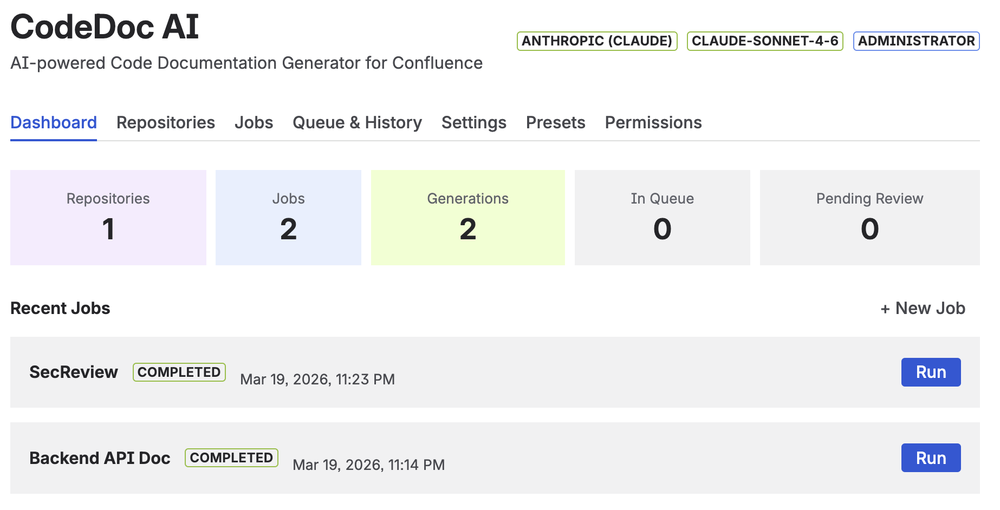Key capabilities:
- Multi-provider AI — Works with Anthropic (Claude), OpenAI (GPT), and Google (Gemini).
- Multi-provider Git — Supports GitHub, GitLab, Bitbucket, and Azure DevOps, including self-hosted instances.
- 8 documentation presets — From developer deep-dives to management overviews, compliance audits, and onboarding guides.
- 10 languages — Generate documentation in English, German, French, Spanish, Italian, Portuguese, Japanese, Chinese, Korean, or a custom language.
- Automatic triggers — Run jobs manually, on every commit/merge via webhook, or on a daily/weekly/monthly schedule.
- AI-powered file selection — A two-pass system where the AI first identifies the most relevant files, then generates documentation from those files only.
- Generation activity tracking — Monitor your documentation generation history with charts (7 days, 4 weeks, 12 months).
2. How It Works
- Connect — Add your AI API key and Git access token in the setup wizard.
- Add Repositories — Browse or paste the URL of the repositories you want to document.
- Create a Job — Select repositories, choose a documentation preset, pick a language, set a trigger, and choose the Confluence space where the page will be created.
- Generate — The app reads your code from Git, sends it to your AI provider, receives the documentation, and publishes it as a formatted Confluence page.
Every generation is tracked with token usage, file count, AI model used, and a direct link to the created Confluence page.
3. Example Output
Here is what generated documentation looks like in Confluence. These pages were created automatically from a Terraform infrastructure-as-code repository using the Developer Documentation preset.
Overview & Tech Stack
The AI generates a structured overview with a technology table listing all frameworks, tools, and cloud services detected in the codebase.
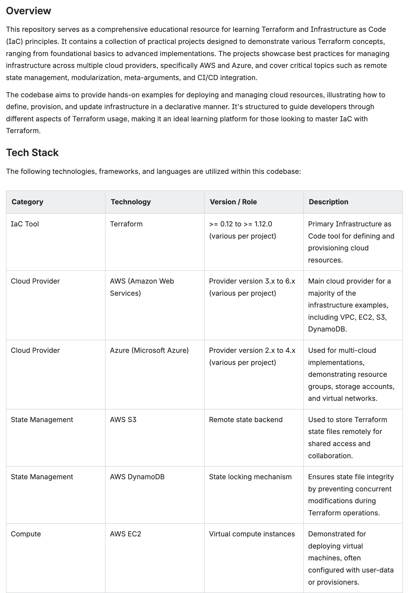Auto-generated overview with tech stack table — versions, roles, and descriptions extracted from code
Architecture & Key Modules
Complex architectures are broken down into core principles, data flow descriptions, and module-by-module documentation with file references.
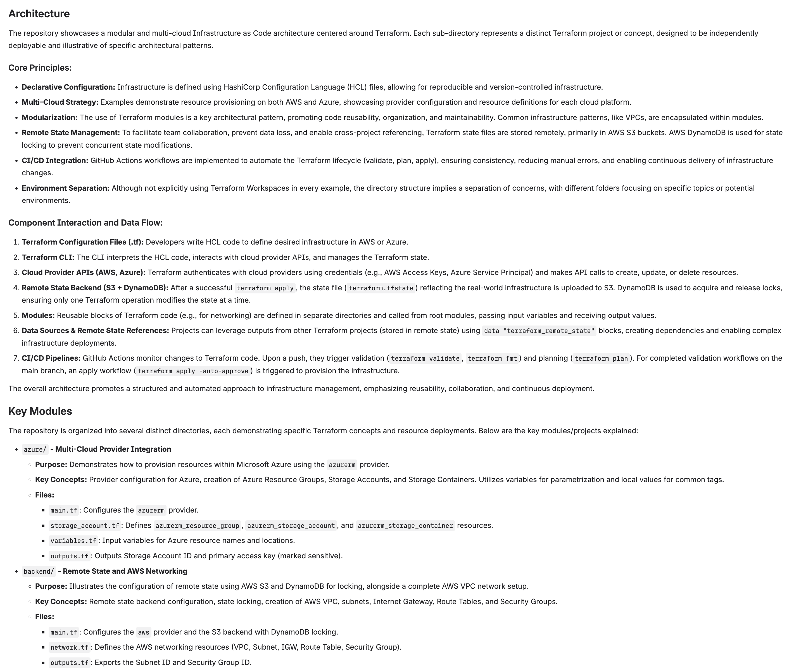Architecture section with core principles, component interaction, and key modules
API Reference & Dependencies
The AI documents APIs, configuration outputs, and software dependencies including version ranges and installation requirements.
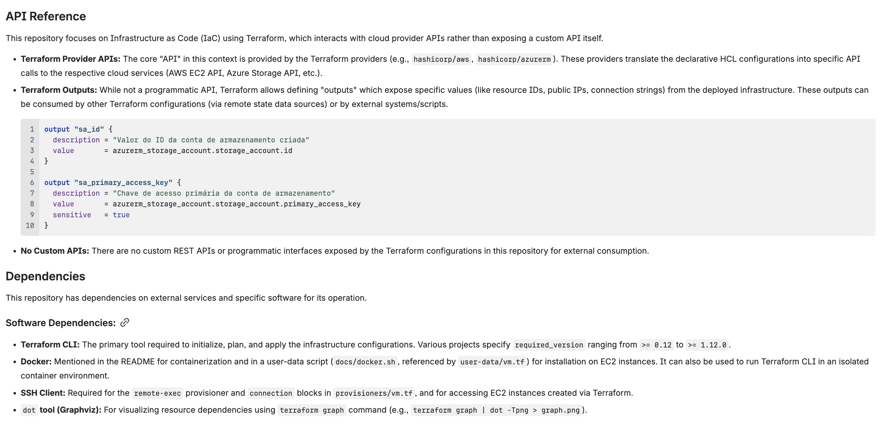API reference with code examples and dependency list
4. Installation
Step 1 — Install from Marketplace
- Go to the Atlassian Marketplace and search for CodeDoc AI.
- Click Get it now (or Try it free for the paid edition).
- Select your Confluence Cloud site and confirm the installation.
Step 2 — Open the App
- In Confluence, click Apps in the top navigation bar.
- Select CodeDoc AI.
- On first launch you will see the Setup Wizard (see next section).
5. Initial Setup (Wizard)
The setup wizard has two steps: connecting an AI provider and connecting a Git provider. Both require an API key or access token from the respective service.
Step 1: Connect AI Provider
CodeDoc AI uses a Bring Your Own Key (BYOK) model. You need an API key from one of the supported providers. The app never stores your source code — it sends it directly from Git to the AI provider using your key.
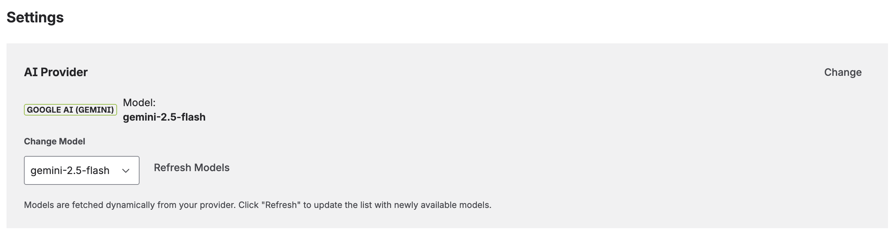Instructions
- Select your AI Provider from the dropdown (Anthropic, OpenAI, or Google AI).
- Paste your API Key.
- Click Connect & Validate. The app verifies the key and fetches available models.
- Select your preferred Model from the dropdown. Models are discovered automatically from your provider — when new models are released, they appear here.
- Click Continue to Step 2.
Where to get your API key:
- Anthropic — console.anthropic.com/settings/keys
- OpenAI — platform.openai.com/api-keys
- Google AI (Gemini) — aistudio.google.com/apikey
Step 2: Connect Git Provider
Connect your Git hosting service so the app can read your repositories. You need a personal access token or repository access token with read permissions.
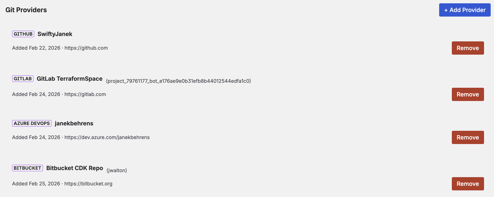Instructions
- Select your Git Provider (GitHub, GitLab, Bitbucket, or Azure DevOps).
- Paste your Access Token.
- Optionally set a Display Name (recommended when using multiple providers, e.g. "Work GitHub").
- For self-hosted instances, enter the base URL (e.g.
https://gitlab.your-company.com). Leave empty for cloud-hosted services. - For Azure DevOps, the organization URL is required (e.g.
https://dev.azure.com/your-org). - Click Connect & Validate.
Creating Access Tokens
Each Git provider has its own way of creating tokens. Below is a brief summary — follow the link for full instructions from the provider.
| Provider | Token Type & Required Scope | Instructions |
|---|---|---|
| GitHub | Personal Access Token (classic or fine-grained) Scope: repo (read) |
GitHub Docs |
| GitLab | Personal Access Token Scopes: read_api, read_repository |
GitLab Docs |
| Bitbucket | Repository Access Token or API Token with scopes Scope: Repositories Read |
Bitbucket Docs |
| Azure DevOps | Personal Access Token Scope: Code (Read) |
Microsoft Docs |
email:api_token. Repository Access Tokens cannot browse all repositories — use "Add by URL" instead.
6. Adding Repositories
After setup, go to the Repositories tab to add the repositories you want to document.
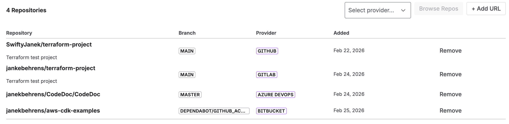Option A: Browse Repositories
- Click Browse Repos.
- If you have multiple Git providers configured, select which one to browse.
- Use the search field to filter by name.
- Check the repositories you want to add.
- Click Add Selected.
Option B: Add by URL
- Click Add URL.
- Paste the full repository URL (e.g.
https://github.com/org/repo). - Set the branch to document (default:
main). - Click Add. The app validates access before adding.
This method works for all token types and is the only option when using Bitbucket Repository Access Tokens (which are scoped to a single repository).
7. Creating Documentation Jobs
A job defines what to document, how to format it, and where to publish it. Go to the Jobs tab and click Create Job.

Job creation: select repositories, preset, language, and trigger
Documentation Presets
Presets control the structure, tone, and depth of the generated documentation. Each preset produces a different Confluence page layout tailored to its audience.
| Preset | Audience | Description |
|---|---|---|
| Developer Documentation | Developers | Technical details with code examples, architecture overview, API reference, configuration, and troubleshooting. 9 structured sections. |
| Comprehensive Technical | Developers | Full deep-dive covering every module, data model, security implementation, build pipeline, testing strategy, and known limitations. 12 sections. |
| Management Overview | Stakeholders | High-level business view without technical jargon. Covers capabilities, risks, scalability, and strategic recommendations. No code examples. |
| Customer Documentation | External customers | Professional documentation for end users. Features, getting started guide, and integration instructions. No internal implementation details. |
| Compliance & Audit | Security / Compliance | Security controls, data classification, access management, GDPR/ISO 27001/SOC2 mappings, and risk register. |
| Onboarding Guide | New team members | Step-by-step setup, key concepts explained simply, day-to-day workflows, and common mistakes to avoid. |
| Quick Reference | Developers | Minimal and concise: tech stack table, key commands, project structure, and important config values. 5 sections. |
| Custom | Any | Define your own documentation style with a custom prompt (up to 2000 characters). Full control over structure and content. |
Trigger Types
Each job has a trigger that determines when it runs.
| Trigger | How it works | Plan |
|---|---|---|
| Manual | Click "Run" on the job to generate documentation on demand. | FREE |
| On Commit | Triggered automatically when code is pushed to the configured branch. Requires a webhook (see below). | PAID |
| On Merge | Triggered automatically when a pull/merge request is merged into the configured branch. Requires a webhook. | PAID |
| Scheduled | Runs on a recurring schedule: daily, weekly, or monthly. All times are in UTC. | PAID |
Webhook Setup (Detailed)
Webhook triggers allow your documentation to automatically regenerate when code changes. The app provides a single Webhook URL that works for all jobs. You add this URL to your Git repository's webhook settings, and the app matches incoming events to the correct jobs by repository URL and branch.
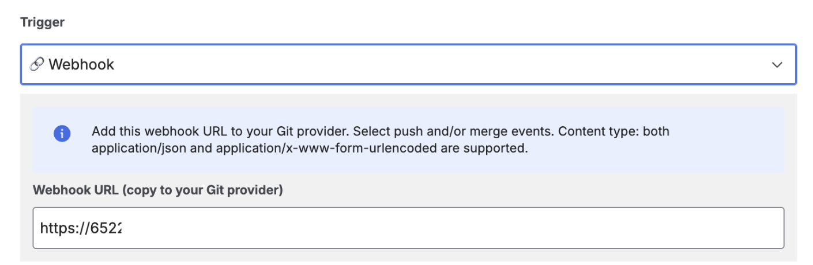Webhook URL displayed when selecting On Commit or On Merge trigger
Supported Webhook Events per Provider
The app processes the following Git events. Configure your webhook to send only the events you need:
| Provider | Push (On Commit) | Merge (On Merge) | Where to Configure |
|---|---|---|---|
| GitHub | push |
pull_request (closed + merged) |
Repository → Settings → Webhooks → Add webhook |
| GitLab | Push Hook |
Merge Request Hook |
Repository → Settings → Webhooks |
| Bitbucket | repo:push |
pullrequest:fulfilled |
Repository → Repository settings → Webhooks |
| Azure DevOps | git.push |
git.pullrequest.merged |
Project settings → Service hooks → Web Hooks |
repo:fork, GitHub issues) will be ignored by the app. If your webhook doesn't trigger a job, check that you selected the correct event type.
Step-by-Step: Adding a Webhook
GitHub
- Go to your repository → Settings → Webhooks → Add webhook.
- Paste the Webhook URL from CodeDoc AI into the "Payload URL" field.
- Set Content type to
application/json. - Under "Which events would you like to trigger this webhook?", select:
- Just the push event — for On Commit triggers.
- Or Let me select individual events → check Pull requests — for On Merge triggers.
- Click Add webhook.
GitLab
- Go to your project → Settings → Webhooks.
- Paste the Webhook URL from CodeDoc AI.
- Under "Trigger", check:
- Push events — for On Commit triggers.
- Merge request events — for On Merge triggers.
- Click Add webhook.
Bitbucket
- Go to your repository → Repository settings → Webhooks → Add webhook.
- Enter a title (e.g. "CodeDoc AI") and paste the Webhook URL.
- Under "Triggers", select Choose from a full list of triggers:
- Check Repository → Push (
repo:push) — for On Commit triggers. - Check Pull Request → Fulfilled (
pullrequest:fulfilled) — for On Merge triggers.
- Check Repository → Push (
- Click Save.
Azure DevOps
- Go to Project settings → Service hooks → Create subscription.
- Select Web Hooks as the service.
- Select the trigger event:
- Code pushed — for On Commit triggers.
- Pull request merged — for On Merge triggers.
- In the Action step, paste the Webhook URL from CodeDoc AI.
- Click Finish.
Scheduled Triggers (Detailed)
Scheduled triggers let your documentation regenerate automatically on a recurring basis without any webhook configuration. Three schedule types are available:
| Type | Configuration | Example |
|---|---|---|
| Daily | Select the earliest hour (0–23 UTC) | Every day starting at ~02:00 UTC |
| Weekly | Select day of week + earliest hour | Every Monday starting at ~08:00 UTC |
| Monthly | Select day of month (1–28) + earliest hour | 1st of each month starting at ~06:00 UTC |
Upcoming scheduled jobs with countdown timer and last run time
File Selection & Analysis
Before generating documentation, the app analyzes your repository to determine which files to include. You have several options:
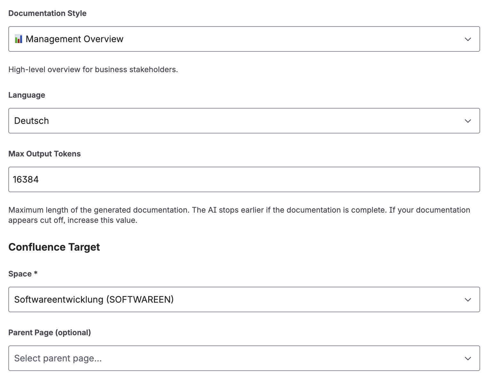Analysis preview showing file count, token estimate, and AI-selected files
- All files — Every code file in the repository (or filtered path) is sent to the AI.
- AI-selected — Click "Select with AI" and the AI analyzes file names and structure to pick the most relevant files. You can then lock the selection (fixed for every run) or leave it dynamic (re-selected each time).
- Manual selection — Check/uncheck individual files in the analysis preview.
- Path filter — Restrict analysis to a subdirectory (e.g.
/srcor/backend). - Include/Exclude patterns — Use glob patterns to fine-tune which files are included. For example, exclude
**/*.test.tsor include onlysrc/**.
The analysis preview shows the total file count, code file count, and estimated token usage before you run the job. Your file selection is saved with the job and restored when you edit it.
Output Token Limit
Under Advanced AI Settings, you can set a maximum output token limit (default: 8192). This controls the length of the generated documentation — not the input. Increase this for comprehensive presets or very large codebases.
Confluence Target
Each job publishes to a specific Confluence space. You can optionally select a parent page to nest the documentation under an existing page, or choose "Root (no parent)" to create a top-level page.
When you run the same job again, the existing Confluence page is updated in place — no duplicate pages are created.
8. Dashboard
The Dashboard is the first screen you see when opening CodeDoc AI. It provides an overview of your documentation activity.

Dashboard with generation activity chart and quick-run job list
- Generation Activity Chart — Visualizes your generation history over 7 days, 4 weeks, or 12 months. Shows completed (green) and failed (red) runs.
- Your Jobs — Quick overview of all jobs with their last run status and a "Run" button to trigger manual generation directly from the dashboard.
- Quick Stats — Total generations, active jobs, and connected repositories at a glance.
9. Queue & Generation History
The Queue & History tab shows everything that's running, queued, completed, or failed.
Active Queue
Shows jobs currently being processed or waiting in line. Each entry displays the job name, a spinner while running, and a Cancel button to remove it from the queue.
Generation History
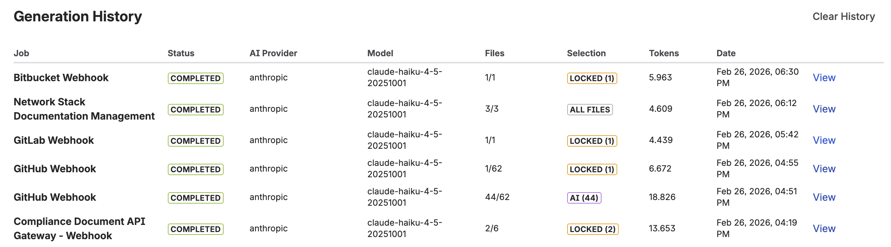Complete generation log with status, model, file count, and token usage
A complete log of every documentation generation with the following details:
- Job — Which job triggered the generation.
- Status — Completed or Failed. Click a FAILED badge to see the full error message in a dialog.
- AI Provider & Model — Which AI service and model were used.
- Files — Number of files analyzed (e.g. "42/128" means 42 selected out of 128 total).
- Method — How files were selected: "AI-selected", "Auto-sorted", or "All files".
- Tokens — Total input + output tokens consumed (relevant for cost tracking).
- Link — Direct link to the generated Confluence page.
Use Clear History to remove all history entries. This does not delete the generated Confluence pages.
Upcoming Scheduled Jobs
When you have jobs with scheduled triggers, this section appears automatically and shows the next run time with a countdown (e.g. "in 3h 45m"), the schedule description, and when the job last ran.
10. Settings
The Settings tab lets you manage all configuration after initial setup.
AI Provider
View your current AI provider and model, or switch to a different one. When you change providers or keys, the app validates the connection and fetches available models. Click Refresh Models to discover newly released models from your provider.
Git Providers
You can connect multiple Git providers simultaneously — for example, a work GitHub and a personal GitLab. Each provider is listed with its type, display label, connected user, and date added.
- Click Add Provider to connect an additional Git service.
- Click Remove to disconnect a provider (you cannot remove the last one).
Webhook Configuration
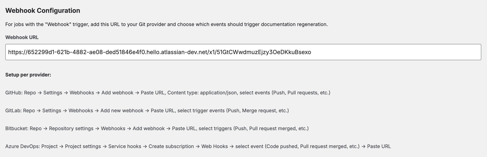The Settings page displays your Webhook URL — a single URL that works for all your webhook-triggered jobs. Add this URL to any repository's webhook configuration in your Git provider. The app automatically matches incoming events to the correct jobs based on the repository URL and branch.
Generation Limits
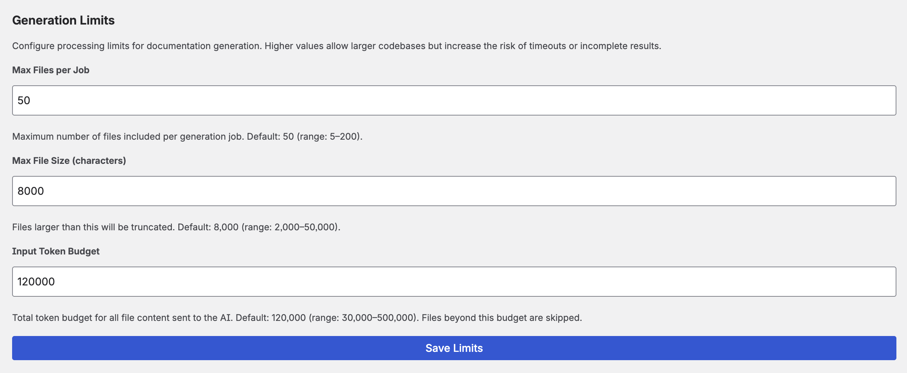Fine-tune how the app handles large repositories:
- Max files per job — Maximum number of files sent to the AI in a single generation (default: 80).
- Max file size — Files larger than this limit are skipped (default: 100 KB). Very large files often contain generated or minified code that doesn't improve documentation quality.
- Input token budget — Maximum input tokens per generation. Limits the total code sent to the AI to control costs.
11. Supported Providers
AI Providers
| Provider | Notable Models | Key Details |
|---|---|---|
| Anthropic | Claude Opus, Sonnet, Haiku | Excellent for technical documentation. Dynamic model discovery. |
| OpenAI | GPT-4o, GPT-4o-mini, o1, o3 | Filters to chat-capable models. Wide model selection. |
| Google AI | Gemini 2.5 Flash, Gemini Pro | Generous free tier. Filters to content generation models. |
Git Providers
| Provider | Cloud | Self-Hosted | Notes |
|---|---|---|---|
| GitHub | github.com | GitHub Enterprise Server | Personal access token with repo scope. |
| GitLab | gitlab.com | Self-managed GitLab | Token with read_api + read_repository. |
| Bitbucket | bitbucket.org | — | Repository Access Token (Bearer) or API Token with scopes (email:token). |
| Azure DevOps | dev.azure.com | Azure DevOps Server | PAT with Code (Read). Organization URL required. |
12. Free vs. Paid Edition
| Feature | Free FREE | Paid PAID |
|---|---|---|
| All 8 documentation presets | Yes | Yes |
| All 10 languages | Yes | Yes |
| All 3 AI providers | Yes | Yes |
| All 4 Git providers | Yes | Yes |
| AI-powered file selection | Yes | Yes |
| Repositories | 1 repository | Unlimited |
| Documentation jobs | 1 job | Unlimited |
| Runs per day | 1 run / day | Unlimited |
| Manual trigger | Yes | Yes |
| Webhook triggers (on commit / on merge) | — | Yes |
| Scheduled triggers (daily / weekly / monthly) | — | Yes |
| Multiple Git providers | — | Yes |
13. Data Processing & Privacy
Understanding how your data flows through CodeDoc AI:
- Source code is fetched from your Git provider using your access token.
- Code is sent to your chosen AI provider using your API key.
- Documentation is generated by the AI and returned to the app.
- A Confluence page is created or updated with the documentation.
- All data transfers are encrypted with TLS.
- The app runs entirely within the Atlassian Forge security boundary — no external servers are involved beyond your Git and AI providers.
- API keys and access tokens are stored in Forge encrypted storage within your Confluence instance.
- No analytics or telemetry data is collected beyond what Atlassian provides by default.
For full details, see our Privacy Policy.
14. Troubleshooting
Generation failed: "AI response was empty or invalid"
This usually means the AI model returned an empty or malformed response. Common causes:
- Token budget too low: If the input token budget is set too low, the AI may not receive enough code to generate meaningful documentation. Increase the input token budget in Settings → Generation Limits.
- Output token limit too low: Increase the max output tokens in the job's Advanced AI Settings (default: 8192). Comprehensive presets may need 12000–16000 tokens.
- Model limitations: Some smaller/cheaper models may struggle with very large inputs. Try a more capable model (e.g. switch from Haiku to Sonnet, or from gpt-4o-mini to gpt-4o).
Generation failed: XHTML parsing error
The AI sometimes produces markup that isn't valid Confluence XHTML. The app includes an automatic XHTML repair engine that detects and fixes broken tags, unclosed elements, and invalid macro syntax. If the error persists after the automatic repair and 3 retries, the app falls back to a simplified format (plain text with headings) to ensure the page is always created. No action required on your part — just re-run the job.
Generation failed: "Rate limit exceeded" (429 error)
Your AI provider is rate-limiting requests. The app automatically retries up to 3 times with increasing delays (3s, 8s, 15s). If the error persists:
- Wait a few minutes and try again.
- Check your AI provider's dashboard for rate limit quotas.
- Consider upgrading your AI provider plan for higher rate limits.
- Reduce the number of files sent to the AI by using AI-powered file selection or exclude patterns.
Generation failed: "Insufficient funds" / "Quota exceeded"
Your AI provider account has no remaining credits. Top up your balance:
- Anthropic: console.anthropic.com/settings/billing
- OpenAI: platform.openai.com billing
- Google AI: Gemini has a free tier. If you exceed it, check AI Studio for quota details.
Generation failed: "Request too large" / "Context length exceeded"
The combined source code exceeds the AI model's maximum input size. Solutions:
- Use AI-powered file selection to reduce the number of files sent.
- Lower the input token budget in Settings → Generation Limits.
- Add exclude patterns to skip large or irrelevant files (e.g.
**/*.min.js,**/vendor/**,**/*.lock). - Restrict the path to a subdirectory (e.g.
/src) instead of the entire repository. - Switch to a model with a larger context window (e.g. Claude Sonnet, GPT-4o, Gemini Pro).
Webhook not triggering: "Event is not supported"
You configured a webhook event type that the app doesn't recognize. See the supported events table above. Only push and pull_request/merge_request events are processed. Other events (fork, issue, comment, etc.) are ignored.
Webhook not triggering: Job not found for repository
The webhook fires correctly but no job is matched. Check:
- The repository URL in the webhook payload must match the repository URL configured in the job (including protocol and path).
- The branch in the webhook payload must match the branch configured for the job.
- The job's trigger must be set to On Commit or On Merge (not Manual or Scheduled).
Bitbucket: "Token is invalid or not supported for this endpoint"
You are likely using an Atlassian Account API token (without scopes). Bitbucket requires either:
- A Repository Access Token — created in Repository settings → Access tokens. Works with just the token value.
- An API Token with scopes — created in Account settings → Security → "Create API token with scopes" → select Bitbucket → Repositories Read. Enter as
email:api_token.
Bitbucket: "Browse" doesn't show my repositories
Repository Access Tokens are scoped to a single repository and cannot list all repositories. Use "Add by URL" instead. To browse all repositories, you need a user-level API Token with scopes.
Scheduled job didn't run at the expected time
Scheduled triggers are checked hourly by the Atlassian platform. Your job will run within approximately 1 hour after the configured time. This is a platform-level constraint. If the job didn't run at all after 2+ hours, check:
- The job trigger is set to Scheduled (not Manual).
- The next scheduled run time shown in Queue & History → Upcoming Scheduled Jobs is correct.
- Your AI provider key and Git token are still valid.
Generated documentation is too short / missing sections
- Increase the output token limit in the job's Advanced AI Settings. Comprehensive presets need more tokens than Quick Reference.
- Include more relevant files — the AI can only document code it receives.
- Try a more capable AI model (larger models produce more detailed output).
Generated documentation contains inaccurate information
AI-generated documentation may contain errors or hallucinations. Always review generated content before sharing it. Tips:
- Use the Developer Documentation or Comprehensive Technical preset for the most accurate technical output.
- Include relevant files (config files, README, package.json) to give the AI more context.
- Use a more capable model for critical documentation.
15. FAQ
How much does AI usage cost?
CodeDoc AI itself charges no per-generation fee — you pay only for the Marketplace subscription (free or paid plan). AI costs are billed directly by your AI provider based on token usage. Each generation's token count is tracked in the history so you can monitor costs. A typical documentation generation for a medium repository uses 10,000–50,000 input tokens and 2,000–8,000 output tokens.
Can I use different AI models for different jobs?
Currently, one model is selected globally and used for all jobs. You can change the model at any time in Settings. If you need different models, run the first job, switch models in Settings, then run the second job.
Can I document multiple repositories in one job?
Yes. Each job can include up to 2 repositories. The AI receives code from all selected repositories and generates a single unified documentation page.
What programming languages are supported?
The app reads all text-based files from your repository. It supports any programming language, framework, or configuration format. The AI model determines how well it understands each language — popular languages (JavaScript, Python, Java, Go, Rust, C#, etc.) work best.
What languages can the documentation be generated in?
English, German, French, Spanish, Italian, Portuguese, Japanese, Chinese, and Korean are built in. You can also select "Custom" and specify any language — the AI will attempt to generate documentation in that language (quality depends on the AI model's capabilities).
Where is my documentation stored?
Documentation is published as a regular Confluence page in the space you selected. You can edit, move, or delete it like any other Confluence page. Running the job again will update the existing page (not create a duplicate).
Do webhook and schedule triggers re-generate from scratch?
Yes. Each trigger causes a full regeneration — the app re-reads the current code from Git, sends it to the AI, and updates the Confluence page with fresh documentation.
Can I use the app with private repositories?
Yes. The app uses your personal access token to authenticate with your Git provider. As long as your token has read access to the repository, it works with both public and private repos.
How do I uninstall?
Go to Confluence Settings → Apps → Manage apps, find CodeDoc AI, and click Uninstall. This removes all app configuration and stored data. Generated Confluence pages remain in your spaces — delete them manually if needed.
16. Support
Need help? We're here for you.
- Email: support@janekbehrens.de
- Bug reports: Use the built-in Bug Report button in the app — it creates a pre-filled email with diagnostic information.
- Response time: Within 24 hours on business days.
Privacy Policy · Terms of Service · © 2026 Janek Behrens